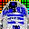

| Rik's Treehouse > Babbling in Binary > My Software > Orphanware |
This page contains software I am no longer developing or maintaining.
Toolbar (alias Rik's Toolbar) provides a way to add a customized floating toolbar to any application. When a button is pressed a pre-defined sequence of keystrokes is sent to the desired window. |  R2DToo (2001-2003)Rik's 2D simulation Tool lets you build and run your own cellular automata or other spatial network simulations. R2DToo is designed for scientists, to help with constructing, running, and collecting data from simulations with features such as live time series plots of interesting statistics and automation to let the user run experiments repeatedly without requiring user interaction. |
RunIEAs (2001-2002)Ok, you want to let other people run Internet Explorer on your computer but you want to let them have their own favorites, home page, etc. Microsoft's solution? Save what you're doing...log off current user...wait...log on as other user...wait...run IE...Done! My solution? RunIEAs <other user>...Done! | TeX Equation Previewer (1999-2000)View and edit TeX equations before compiling your source. View your equation as you type in (almost) real time. Copies modified text to the clipboard for quick use in your favorite text editor. |
|
[Rik's Office Hours] [Contact Rik] Last updated: Fri Nov 13 2009, 11:00pm |